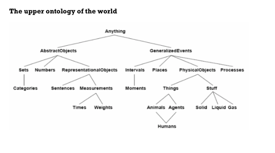
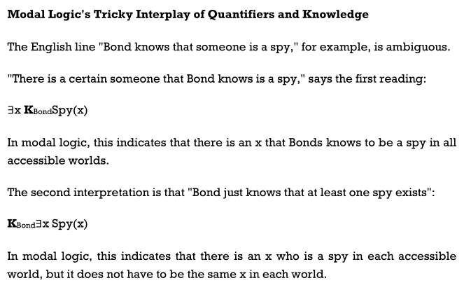
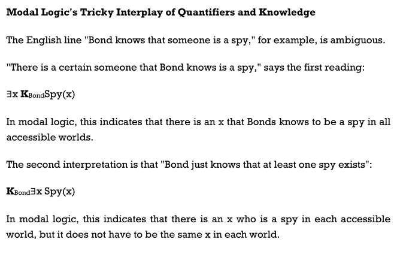

Unit V: Reasoning
Unification and first order inference
-
It is the key component of First-order inference algorithms. Unification is the process used by the lifted inference rules to find substituents that could give identical but different logical expressions. It means the meaning of the sentence should not be changed, but it should be expressed in multiple ways. The UNIFY algorithm in unification takes two sentences as input and
then returns a unifier if one exists:
UNIFY(p,q)= ? where SUBST( ? , p) = SUBST( ?, ).
Let see how UNIFY works with the help of the below example:
Given:
Knows(Ram,x). The question is- Whom does Ram knows?
The UNIFY algorithm will search all the related sentences in the knowledge base, which could unify with Knows(Ram,x).
UNIFY (Knows(Ram, x), Knows(Ram, Shyam))?{x/Shyam}
UNIFY (Knows{Ram,x}, Knows{y, Aakash})?{x/Aakash, y/Ram}
UNIFY (Knows{Ram,x}, Knows{x, Raman})?fails.
The last one failed because we have used the same variable for two persons at the same time.
Unification Algorithm
Earlier, we have studied TELL and ASK functions which are used to inform and interrogate a knowledge base. These are the primitive functions
of STORE and FETCH functions**. STORE** function is used to store a
sentence s into the knowledge base and FETCH function is used to return all the unifiers with some sentences.
A simple scheme called predicate indexing puts all the
facts in one bucket and all the brother facts in another. The buckets can be stored in a hash table for efficient access.
Predicate indexing is useful when there are many predicate symbols but only a few clauses for each symbol
Forward Chaining
First-order definite clauses are disjunctions of literals of which exactly one is positive. definite clause is either atomic, or is an implication whose antecedent is a
conjunction of positive literals and whose consequent is a single positive literal.
A typical first-order definite
clause looks like this:
King(x) ^ Greedy(x) => Evil(x) ,
but the literals king(john) and greedy (john) also count as definite clauses. First-order literals can include variables, so Greedy(y) is interpreted as “everyone is greedy” (the universal quantifier is implicit).
In forward chaining, we start with the atomic sentences in the knowledge base and apply Modus Ponen in forward direction. Also adding new sentences until any inference is not made.
Starting from the known
facts, it triggers all the rules whose premises are satisfied, adding their conclusions to the
known facts. The process repeats until the query is answered (assuming that just one
answer is required) or no new facts are added.
Consider the below axioms:
- Gita loves all types of clothes.
- Suits are clothes.
- Jackets are clothes.
- Anything any wear and isn’t bad is clothes.
- Sita wears skirt and is good.
- Renu wears anything Sita wears.
Apply forward chaining and prove that Gita loves Kurtis.

Backward Chaining
These algorithms work backward from the goal, chaining through rules to
find known facts that support the proof. Backward chaining, is clearly a depth-first search algorithm. is clearly a depth- first search algorithm suffers from problems with repeated states and incompleteness.
Example:
Consider the below axioms:
-
Gita loves all types of clothes.
-
Suits are clothes.
-
Jackets are clothes.
-
Anything any wear and isn’t bad is clothes.
-
Sita wears skirt and is good.
-
Renu wears anything Sita wears.
Apply backward chaining and prove that Gita loves Kurtis.

NOTE:
the graph of forward and backward chaining is same. It means that forward chaining follows thebottom-up approach and backward chaining follows thetop-down approach.
Resolution
Resolution works for any knowledge base.
This method is basically used for proving the satisfiability of a sentence. In resolution method, we use Proof by Refutation technique to prove the given statement.
The key idea for the resolution method is to use the knowledge base and negated goal to obtain null clause (which indicates contradiction). Resolution method is also called Proof by Refutation. Since the knowledge base itself is consistent, the contradiction must be introduced by a negated goal. As a result, we have to conclude that the original goal is true.
In FOPL, the process to apply the resolution method is as follows:
- Convert the given axiom into CNF, i.e., a conjunction of clauses. Each clause should be dis-junction of literals.
- Apply negation on the goal given.
- Use literals which are required and prove it.
- Unlike propositional logic, FOPL literals are complementary if one unifies with the negation of other literal.
Note: Skolemization is the process of removing existential quantifiers by elimination.
Knowledge Representation

Humans are best at understanding, reasoning, and interpreting knowledge. Humans know things, which is that of the knowledge and as per that of their knowledge they perform several of the actions in that of the real world. But how machines do all of these things come under the knowledge representation and the reasoning. Hence we can describe that of the Knowledge representation as follows they are:
- Knowledge representation and the reasoning (KR, KRR) is the part of Artificial intelligence which concerned with AI agents thinking and how thinking contributes to intelligent behaviour of agents.
- It is responsible for representing information about the real world so that a computer can understand and then can utilize that of the knowledge to solve that of the complex real world problems for instance diagnosis a medical condition or communicating with humans in natural language.
- It is also a way which describes that how we can represent that of the knowledge in that of the artificial intelligence. Knowledge representation is not just that of the storing data into some of the database, but it also enables of an intelligent machine to learn from that of the knowledge and experiences so that of the it can behave intelligently like that of a human. What to Represent: Following are the kind of knowledge which needs to be represented in that of the AI systems:
- Object: All the facts about that of the objects in our world domain. Example Guitars contains strings, trumpets are brass instruments.
- Events: Events are the actions which occur in our world.
- Performance: It describes that of the behaviour which involves the knowledge about how to do things.
- Meta-knowledge: It is knowledge about what we know.
- Facts: Facts are the truths about the real world and what we represent.
- Knowledge-Base: The central component of the knowledge-based agents is the knowledge base. It is represented as KB. The Knowledgebase is a group of the Sentences (Here, sentences are used as a technical term and not identical with the English language). Knowledge: Knowledge is the awareness or familiarity gained by that of the experiences of facts, data, and situations. Following are the types of knowledge in artificial intelligence:
Ontological Engineering

- This field of engineering describes:
- How to make representations that are more broad and adaptable
- Actions, time, physical objects, and beliefs are examples of concepts.
- Works on a far larger scale than K.E.
- Define general framework of concepts
- Upper ontology
- Limitations of logic representation
- Red, green and yellow tomatoes: exceptions and uncertainty.
- Ontological engineering is a term used to describe the process of representing abstract concepts.
Categories and Objects
- Sorting the items into categories.
- At the level of categories, some reasoning takes happen.
- "I'd like to eat an apple," says the narrator.
- Member(x, Apple) and Subset(x, Apple) are Apple(x) and Member(x, Apple) respectively (Apple, Food).
- The categories create a hierarchy, or simply a network, in which each class inherits the properties of the parent (apples are both food and fruit).
- A taxonomy is made up of the categories of a class.
- The organisation of items into categories is required by KR.
- Interaction at the object level;
- Reasoning at the category level
- Categories play a role in predictions about objects
- Based on perceived properties
- FOL can represent categories in two ways (First Order Logic)
- Predicates: apple(x)
- Reification of categories into objects: apples
- Category = set of its members
- Category organization
- Relation = inheritance:
- Food is edible in all forms; fruit is a subclass of food, and apples are a subclass of fruit, hence an apple is edible.

Events
The usefulness of situation calculus is limited: it was created to represent a world in which activities are discrete, instantaneous, and occur one at a time. Consider filling a bathtub, which is a continual action. Situation calculus can claim that the tub is empty before the action and filled after the action, but it can't describe what happens in the middle of the activity. It also can't depict two simultaneous actions, as cleaning one's teeth while waiting for the tub to fill. We present an alternative formalism known as event calculus to address such circumstances, which is based on points of time rather than situations.
Instances of event categories are used to describe events.4 Shankar's flight from San Francisco to Washington, D.C. Is described as follows:
- E1 ∈ Flyings ∧ Flyer (E1, Shankar ) ∧ Origin(E1, SF) ∧ Destination(E1,DC)
Then we use Happens(E1, I to indicate that the event E1 occurred at the time interval i. A (start, finish) pair of times is used to express time intervals.
Mental Objects & Modal Logic
 
 
Reasoning Systems for Categories
skipped
Reasoning with Default Information
skipped